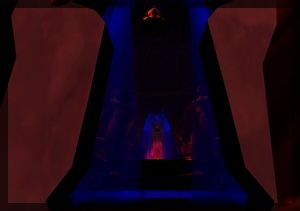
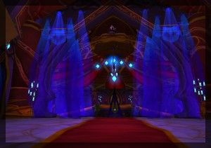
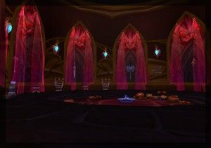
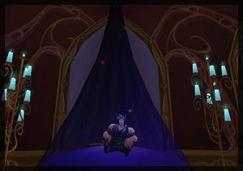
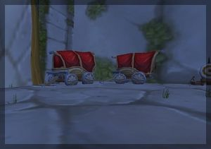
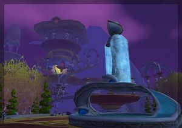
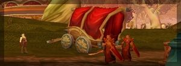

Les Terres de Kirin Tor
Kaeldras
Points : 4
Joué par :
[ Information masquée ]
Lieu de naisance : Lune d'Argent
Signe de naissance : Panda
Sexe : Homme
Race : Elfe
Faction : Alliance
Formation : Voleur
Guilde :
Artisanat 1 : Ingenieur
Envoyer un MP
Informations hrp : Elfe de sang de taille moyenne, bien formé et au visage fin.
-N'a pas d'odeur
-Vêtu de cuir noir
-Quelques "cicatrices" sur les poignets et le long des côtes.
(Le reste a venir)
Description : -=Kaeldras est un Elfe de Sang=-
(pas de possibilité de choisir la race Elfe de sang encore sur le site)
Kaeldras est un techno-elfe et ancien membre du commando Royal de Lune d’Argent. Suite à une mission ratée, les survivants blessés fûrent envoyés dans un laboratoire secret dans les sous-sol de la cité de Quel’Thalas afin de les sauver. Un projet longtemps étudié par les mages et ingénieurs elfes de sang a donc été appliqué. Les organes et membres du corps trop fragiles et blessés fûrent remplacés par de la technologie de pointe elfe, mélangé à de la puissance arcanique des mage afin d’alimenter en énergie ces parties mécaniques. Ces elfes devinrent mi-machine, mi-elfe. Ce sont ceux que l’on nomme les techno-elfes. Ils ont cependant un grand besoin en cristaux de mana pour alimenter leurs organes artificiels et leurs capacités. Ce sont d’excellents assassins, doués d’un camouflage hors du commun et d’une précision accrue. Des soldats d’élite donc.
Septième Ère [2]
Lune de la Force
Décade du Panda
Décade du Gorille
Décade de l'Ours
Lune d'Agilité
Décade du Tigre
Décade du Singe
Décade du Faucon
Lune de l'Esprit [2]
Décade de la Chouette
Décade de la Baleine [1]
Le Manthas Club
Le Manthas Club
Ce soir là, la Lune était à demi couverte d'un épais nuage.
Les rues de Lune d'Argent étaient toujours aussi animées, toujours aussi chaleureuses et savoureuses.
Kaeldras se dirigea vers le Manthas Club comme à son habitude. La rue était bien sombre, un crystal de lumière avait dû s'épuiser... surement...
Il écarta les rideaux de l'entrée puis se plongea dans l'univers sensuel de ces lieux.

Traversant les pièces l'une aprés l'autre, détaillant chaque personnes d'un bref regard, il se dirigea vers le Maitre du Manthas.

Après a voir pris réservation d'un salon, il partie choisir une demoiselle de compagnie et plongea dans les couloirs du Manthas...

Une fois arrivé au salon réservé, il poussa le rideau, invitant sa demoiselle à entrer, puis referma les rideaux derrière lui.
S'installant sur les coussins, la jeune elfe partie chercher des huiles aux odorats aphrodisiaques dans la pièce a côté.
Il avait choisit le salon bleu.

Une longue nuit venait de commencer...
Quand soudain, des cris se firent entendre l'étage en dessous.
Le couple dû remettre a plus tard ses oocupations, et Kaeldras fonça au balcon, tout juste a moitié vétu.
Un groupe d'elfes s'enfuient a travers les ruelles, se dirigeant vers la sortie de la ville. Impossible de les ratrapper...
Une fois rhabillés, tous deux descendirent voir les dégats.
Une elfe assassinée d'un coup de poignard, un client agonisant et beaucoup de casse.
Le client s'avera être un haut commerçant de la cour royale, souvent soupçonné de contrebande de produits illicites.
Une marque avait été dessinée sur le ventre de la jeune femme avec son sang : "RSC".
Après quelques recherches et surtout quelques piecès d'or, Kaeldras obtenu son information : RSC signifiait "Ralthan Selectus Clan".
C'était d'après les rumeurs un groupe d'elfes renégats, voulant régner sur le commerce florissant de la ville, et plus précisement sur les composants illégaux.
Kaeldras partie retrouver son ordre pour dévoiler ces quelques informations...
Décade du Lapin [1]
"Opération Aigle Bleu"
Les Traficants
---=========================================---
Mission : "Opération Aigle Bleu"
Fiche : Soldat N°14
Coéquipiés : Soldats N°7, 12 et 15
Armes : Fusil Gobelin High-tech avec lunette de précision, deux Lames d'assassin, Lunettes Gobelines à vision nocturne amplifiée et dynamite à retardement.
Objectif : Localiser les traficants de marchandise illégale et intercepter leur livraison. Faire le maximum de prisonniers.
Pièces à conviction :
Gnomographies :
Arrivée du navire de transport "Le Satyre" il y'a deux jours sur les quais du port. Contenu du navire inconnu.

Débarquement de plusieurs chariottes avec l'aide des déshérithés, puis répartitions de celles-ci.
Départ de l'escouade : 4h
*Fin de fiche signée d'une encre rouge dont le nom est pratiquement illisible*
Huitième Ère [1]
Lune de la Force [1]
Décade du Panda [1]
"Opération Aigle Bleu" (Rapport)
Rapport Mission
Rapport : Soldat N°14, Caporal de la section techno-elfe
Opération : Aigle Bleu
Soldats concernés: N°7, 12, 14 et 15
Arrivé au port vers le milieux de la nuit, nous nous sommes dirigés les docks de débarquement de marchandises. Après une heure d'observation, nous n'avons vu que deux roulottes sortir du bâteau, les autres étant déjà en préparation.
Une quinzaine de minutes plus tard, les premiers convois sont partis vers le sud et l'ouest.
Un groupe de bannis ont pris une petite embarcation et se sont dirigés vers le Nord.
Nous avons decidé de suivre cette embarcation à distance le long de la côte. Dalnea est partit avertir le groupe posté un peu plus haut du port de suivre les roulottes. Une fois arrivé au Nord, la barque se dirigea vers l'Académie de Falthrien.

Toutes les caisses fûrent déchargées et apportées dans les hautes pieces de l'Académie.
Suite aux rapports des autres groupes, il en découle bien un résultat identique : ces roulottes se camoufles en roulottes commerciales, les "vendeurs" sont des traitres elfes de sang, le Ralthan Selectus Clan est trés probablement derrière tout cela.
Le même symbole que celui retrouvé sur le corps de la jeune femme du Manthas Club a été retrouvé sur le corps d'un de ces commerçants abattu par l'un de nos groupes.
Gnomographie :

Nous ignorons encore ce que ces caisses contenaient, la roulotte du marchand abattu était vide, dans le but de détourner l'attention probablement.
Décade du Gorille
Décade de l'Ours
Lune d'Agilité
Décade du Tigre
Décade du Singe
Décade du Faucon
Lune de l'Esprit
Décade de la Chouette
Décade de la Baleine
Décade du Lapin